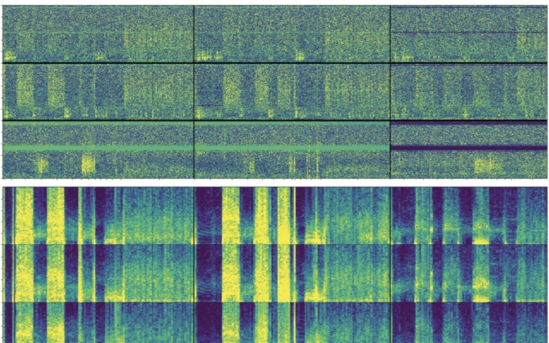

Understanding brain function requires modeling a high-dimensional, nonlinear dynamical system continuously driven by sensory input, shaped by internal state and context, and expressed through behavior. Machine learning can be used to extract predictive structure from large-scale neural recordings, but its scientific value hinges on whether fitted parameters admit interpretation as testable hypotheses about neural computation. This thesis develops and applies interpretable predictive models—primarily linearized encoding models that map stimulus or behavioral features onto neural responses—to investigate (i) how human cortex represents abstract concepts during naturalistic language comprehension and (ii) how deep brain stimulation (DBS) modulates movement-related neural dynamics in Parkinson’s disease. The first study addresses a central limitation of encoding models built on dense word embeddings or neural network activations: superposition. When latent semantic factors outnumber embedding dimensions, distinct concepts become entangled along shared directions, rendering voxelwise regression weights uninterpretable and formally non-identifiable. I introduce the Sparse Concept Encoding Model, which applies sparse dictionary learning to project dense embeddings into an overcomplete basis of interpretable concept atoms. Because each atom isolates a coherent semantic direction, voxel tuning can be read directly from regression coefficients. Applied to whole-brain fMRI acquired during naturalistic story listening, this approach matches the prediction accuracy of conventional dense models while substantially improving interpretability. The resulting cortical maps reveal convergent selectivity for time, space, and number in the intraparietal sulcus and the inferior frontal gyrus—consistent with the shared-magnitude hypothesis—and uncover systematic similarity structure among distributed semantic representations. The second study moves to a clinical domain where characterizing neural dynamics carries immediate therapeutic implications. Parkinson’s disease is increasingly understood as a disorder of network dynamics wherein motor symptoms arise from aberrant oscillatory activity across basal ganglia and sensorimotor cortex. Yet, DBS remains an open-loop therapy with parameters tuned heuristically. Using a home-deployed multimodal data collection platform integrating bidirectional neurostimulators, bilateral wrist accelerometry, and video-based pose estimation, we recorded synchronized neural and behavioral data from two participants performing standardized motor tasks across multiple stimulation amplitudes. By building encoding models that predict neural spectral power data from behavioral features, we demonstrate how temporally rich predictors such as full acceleration spectrograms and task labels outperform coarse movement summaries. Thus, this study highlights the importance of fine-grained behavioral structure for identifying movement-related variance in sensed neural signals. In the participant with stronger baseline model performance, higher stimulation amplitudes enhanced prediction performance across sensorimotor cortex and subthalamic nucleus. We show that these gains arise from amplification of a movement-related spectral component characterized by beta suppression alongside alpha/delta and gamma enhancement, including a prominent peak at the stimulation-entrained subharmonic. This interpretation is consistent with “information lesion” accounts of DBS, wherein pathological synchronization impedes movement-related signaling and high-frequency stimulation restores information flow through basal ganglia–cortical circuits. Together, these studies illustrate how high-volume data collected under naturalistic or semi-naturalistic conditions can be analyzed with interpretable predictive models to transform accurate prediction into mechanistic neuroscientific hypotheses.